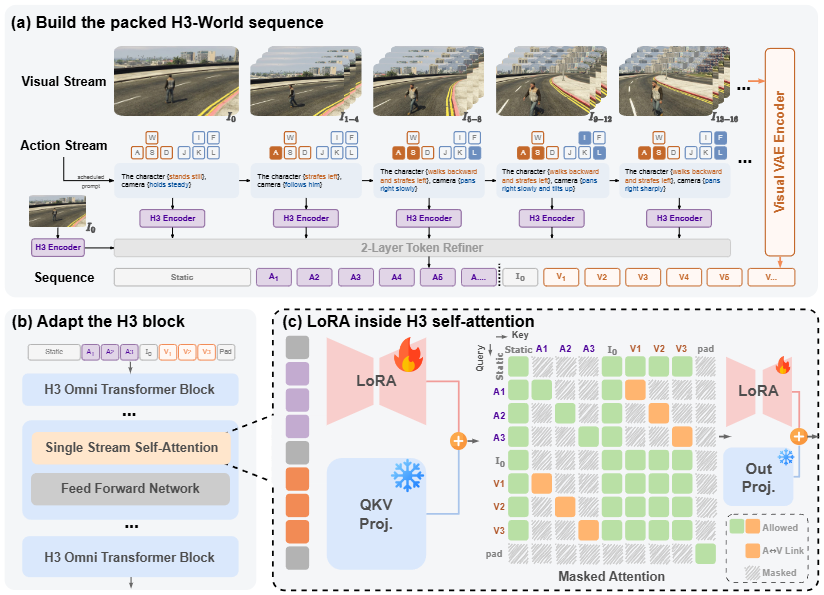

01
Neon alley
First-person forward control in an urban environment.
H3-World enables character and camera control across diverse visual environments.
Anonymous project page for conference review

We introduce an action-controllable world model that translates keyboard input into temporally grounded video control.
H3-World converts character and camera actions into a short language instruction for each video latent frame. A directed attention mask binds each instruction to its corresponding frame, enabling precise action-to-motion control without adding action-specific modules.
Only a lightweight adaptation is trained on self-attention projections, allowing the same initial frame to produce different coherent trajectories under different keyboard schedules.
Visual tokens and action descriptions share one packed sequence; directed attention aligns each instruction with its future visual latent.

High-resolution figures are provided locally for closer inspection during review.

Local demonstration videos only. This page has no analytics, visitor counters, or external account links.
First-person forward control in an urban environment.
First-person exploration in a complex scene.
Third-person navigation across an open landscape.
Third-person motion in a detailed interior.